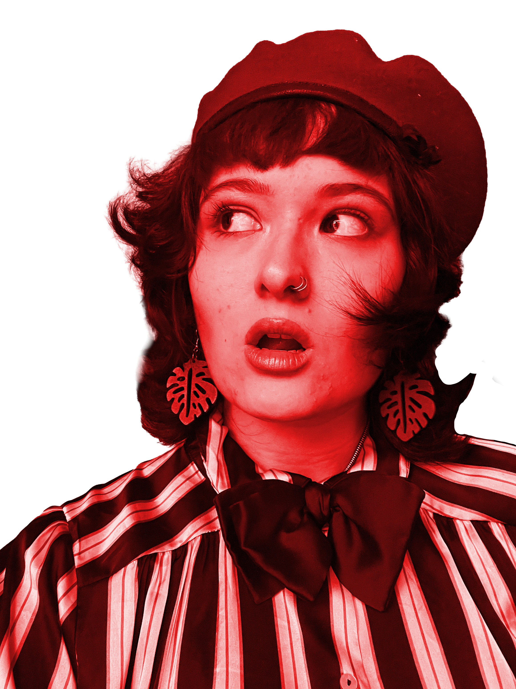
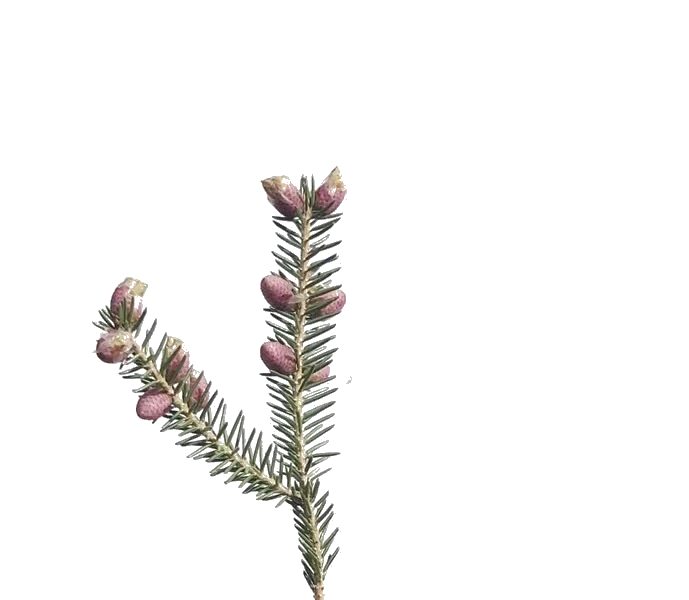

Willkommen in Maries Garten Da steht sie, wie immer in der Mitte, aber nicht in ihrer oder jenigen, der Begegnung schenkt. Demonstrativ und ion, laute Frau, auch hysterisch. Sie ist bergauf rennend und stolpert in den Garten. Ihr Garten. Voller sie und keinem sonst, außer jemand stünde auf der Gästeliste, aber die hat mehr Warteliste als ihre To-Do. Oder sowas. Alles so voll, so voll und für diesen Langstreckenlauf helfen keine Asics keine New Balance, denn hier ist 2nd Hand Vintage Balance im Garten Eden. Recourssenschonend. Kein Gott, keine Religion, eher Garten Erdinger Weissbier, wenn du mich fragst. Aber keiner fragt, wo ist denn der Bus? Müsst ihr schon los? Maries Garten hatte die Ruhe in sich aber no Relief Hardtechno stampfen schreien und gezogen werden in den Garten meiner kleinen Ruhe. Komm vorbei, wenn du dich traust, aber nicht so auf Heirat, sondern nur Mut zum Garten. Großer. Da kommt der Bus ja.
